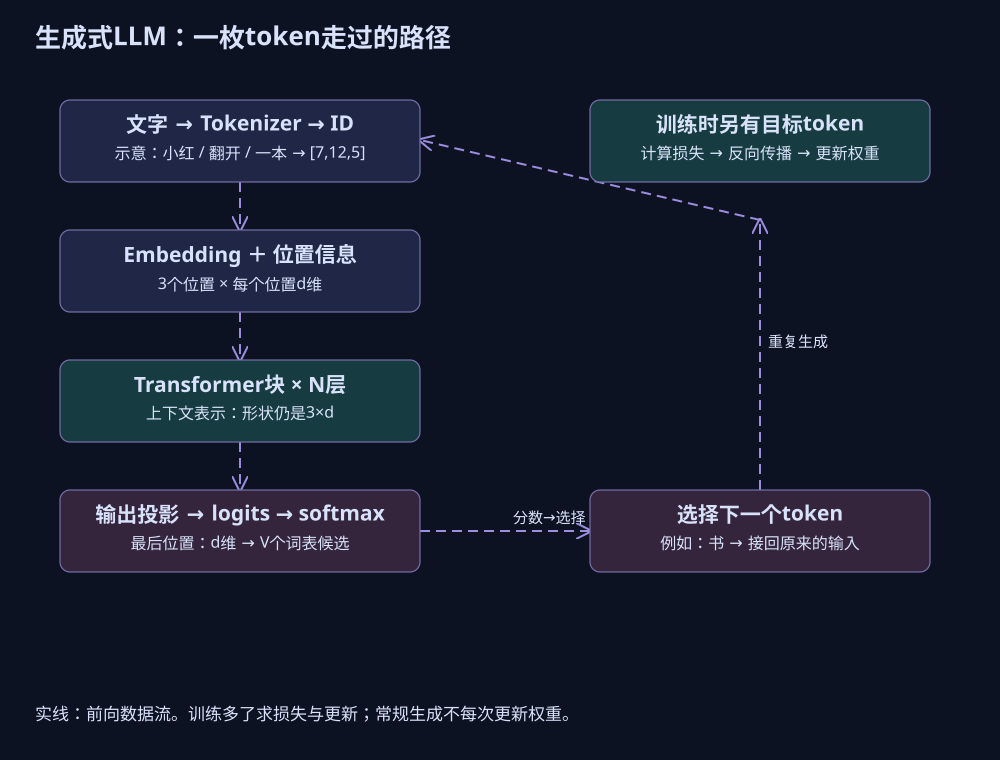

第1课 / 14课
先看懂一次回答
你输入“今天天气很”，模型怎样接一个字？先把模型当作会给候选打分的机器。它还没有把整句答案藏在某个抽屉里：输入前缀，得到下一token分数，选一个，接回前缀，再重复。

先找输入，再沿箭头读输出。点击大图查看。我们先玩一次“接下一词”
你在输入框写下：今天 天气 很。先别管机器内部怎么算，只看它这一次要完成的任务：给“很”后面可能接的词排出一份概率。
你给它的内容今天 天气 很这叫前缀：已经出现的文字。
它给候选打分后，变成概率好 70% 冷 20% 忙 10%数字为教学示意，不是真实模型的输出。
这次选中了“好”今天 天气 很 好把新词接回去，再预测下一个。
这就是本课最重要的循环：看已有文字 → 给候选分配概率 → 选一个 → 接回输入。一次选的是一个token。token可以先理解成模型处理文字的小片段，下一课再解释怎样切分。
“会回答”和“怎样学会”先分开
使用模型：让它做题
给出“今天 天气 很”，模型利用已经学好的内部设置，计算下一片段的概率，再继续生成。
这叫推理，这里的意思是运行模型得到输出，不特指逻辑推理能力。
训练模型：根据例子改设置
训练材料写的是“今天 天气 很 好”。模型如果只给“好”很低的概率，训练过程会利用这个差距调整内部设置。
这些可调整的数字叫参数。怎样计算差距、怎样调整，留到第9、10课。
先用一个更小的例子认识“参数”
假设有一台只会估计两杯饮料总价的小机器。它收到“杯数2”，内部暂时把每杯价格设成5元，就算出2×5＝10元。这里的“5”是可以调整的设置，类似一个参数。
| 已知什么 | 机器怎么猜 | 看到实际账单后 |
|---|
| 买了2杯 | 暂估每杯5元，合计10元 | 账单12元，说明这次低估2元 |
| 仍是2杯 | 把估计单价改成6元 | 合计12元，这次对上了 |
这个例子只说明“输入没变，内部数字变了，输出就能变”。真实语言模型不是计算奶茶单价，也不是只调一个数；我们先认清输入、参数、输出三个角色。如何自动找到修改方向，需要后面的训练课程，今天不要求会导数。
这一课只记住两件事生成时，文字一段段接长；训练时，利用样本调整参数。聊天模型生成一条回答，通常不会每次顺手把参数也训练一遍。
先预测，再动手
先记下当前输出；只改一个条件，观察数值与图形怎样变化，再用本课过程解释原因。
用一道题检查是否懂了
生成“好”后下一轮的输入是什么？
答案与理由
原前缀加上“好”。输入条件改变，但模型权重通常未更新。
查看对应来源专题、完整算例与代码 →
检查这次操作，你真的看懂了吗？
点击接回“很”后，下一轮输入还是只有“今天 天气”吗？
答案与理由
不是。前缀包含刚选的“很”。输入改变，参数通常没有因此更新。